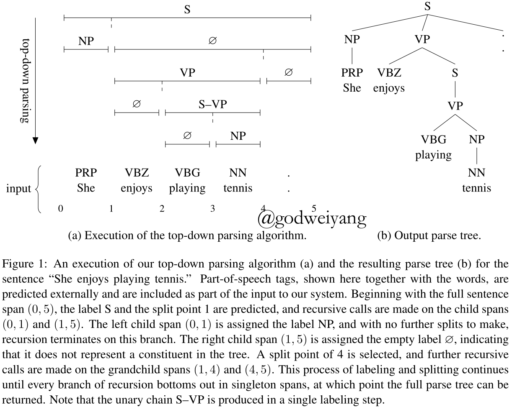
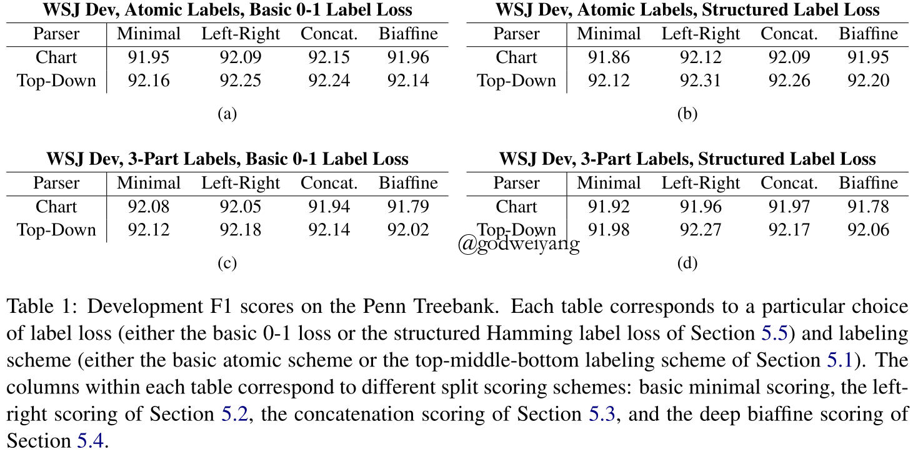
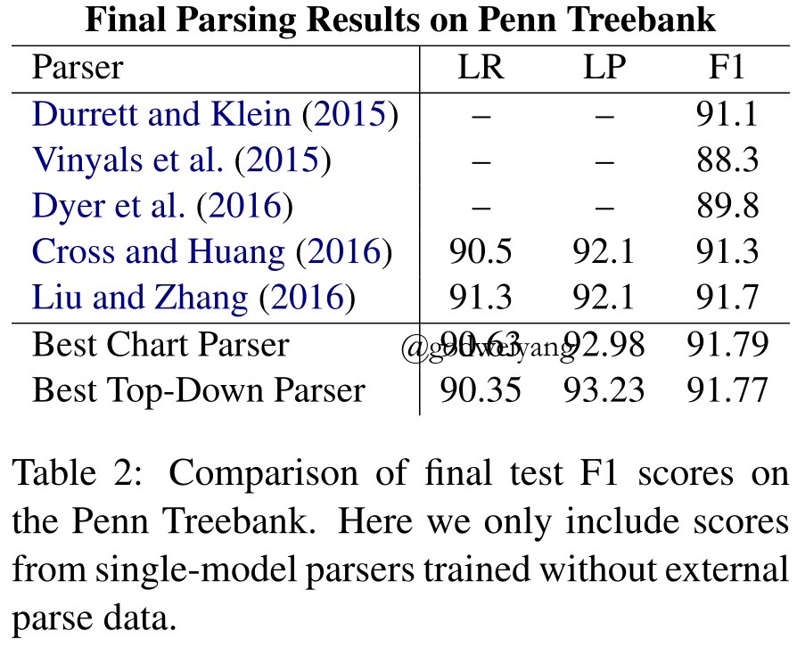

今天要分享的是伯克利2017年发表在ACL的一篇成分句法分析论文，论文和代码地址都已经放在上面了，代码里还给出了处理过的PTB数据集，使用起来非常方便。
摘要
本文提出了一种不同于传统方法的成分句法分析方法。
传统的句法分析器需要预处理出语法规则集合，然后利用语法规则来进行各种句法分析，这类方法的弊端有很多，我列举了主要的三点：
- 语法规则集合构造的好坏直接影响到分析效果的好坏。
- 不仅如此，利用语法规则的方法时间复杂度高，因为每次都要遍历一遍语法规则集合来决定每个短语采用哪一条语法规则。
- 还有一种弊端就是利用语法规则的方法无法产生新的产生式，也就是说如果测试集中的语法规则没有在训练集中出现过，那么是无法预测出来的。
而本文提出的模型不需要预先构造出语法规则集合，只需要预测出每个短语的label和split就行了，这样就能构造出一棵完整的句法树。
该模型分为编码与解码两部分，其中编码部分就是利用双向LSTM将每个词和短语表示成向量，解码部分提出了两种模型，一种是chart模型，类似于CKY算法，另一种是top-down模型，就是自顶向下的贪心算法，具体模型之后介绍。
编码模型
一棵句法分析树可以看做是$(label, span)$的集合，也就是句法树中的每一个结点的类别是label，该结点对应的短语在句子中的下标范围就是span。所以模型的任务就是要预测这个集合，给每一个label和span一个得分，找出使得一个句子得分最高的$(label, span)$集合即可。
那么我们的编码模型任务就是要得出每一个短语的表示，并将其转换为短语的label得分和span得分。这里用到的就是最简单的双向LSTM，对于句子的第$i$个位置，得到它的双向表示$f_i$和$b_i$，那么$span(i,j)$就可以表示为$[f_j-f_i,b_i-b_j]$。
然后将短语表示输入到两个单独的单层前馈神经网络中，就能分别得到label得分和span得分了。假设用$s_{ij}$表示$span(i,j)$的短语表示，那么label得分和span得分可以分别表示为：
\[\begin{array}{*{20}{l}}{ {s_{labels}}(i,j) = {V_l}g({W_l}{s_{ij}} + {b_l})}\\\ { {s_{span}}(i,j) = {v_s}^{\rm{T}}g({W_s}{s_{ij}} + {b_s})}\end{array}\]
注意到这里计算出来的label得分是一个向量，维数为label的类别数，而span得分计算出来就是一个标量了。而对于某一个特定的类别，它的得分就可以直接从label得分向量中取出对应的那一维就行了：
\[{s_{label}}(i,j,l) = {[{s_{labels}}(i,j)]_l}\]
还有个重要的问题就是一元和$n$元的产生式怎么处理，对于一元产生式，可以将所有的类别合并为一个新的类别，然后加入类别集合中共同预测就行了，在实现代码中，将一元的产生式链上面的类别合并成了一个元组作为这棵子树的label。对于$n$元的产生式，可以添加一个临时类别$\emptyset $，相当于进行了二叉化，所有的新增节点全部预测为$\emptyset $。
chart解码模型
chart模型本质上就是一个动态规划算法，类似于CKY算法。
首先一棵句法树的总得分可以表示为组成它的$(label, span)$集合的label得分与span得分之和：
\[{s_{tree}}(T) = \sum\limits_{(l,(i,j)) \in T} {[{s_{label}}(i,j,l) + {s_{span}}(i,j)]} \]
我们目的就是寻找使得该式最大的集合$T$，利用动态规划可以将时间复杂度降到$O(n^3)$。
对于叶子结点的情况，因为没有split，所以我们只需要预测最大得分的label就行了：
\[{s_{best}}(i,i + 1) = \mathop {\max }\limits_l [{s_{label}}(i,i + 1,l)]\]
而对于一般的$span(i,j)$，我们不仅要预测label，还得预测split。对于split$k$，我们可以将split得分表示为：
\[{s_{split}}(i,k,j) = {s_{span}}(i,k) + {s_{span}}(k,j)\]
那么最大得分可以表示为：
\[{s_{best}}(i,j) = \mathop {\max }\limits_l [{s_{label}}(i,j,l)] + \mathop {\max }\limits_k [{s_{split}}(i,k,j) + {s_{best}}(i,k) + {s_{best}}(k,j)]\]
这样就可以对label和split单独预测，在实际代码实现中，去掉了${s_{split}}(i,k,j)$这一部分，也就是只预测label得分之和最高的split。这样做的一个好处就是防止了二叉化过程中，从左边开始合并和从右边开始合并得到的分数不一样，从而导致偏差，另外加上这部分效果提升也不大，所以为了简便就删掉了。
训练的话采用的还是Max-Margin：
\[max\left( {0,\Delta (\hat T,{T^*}) - {s_{tree}}({T^*}) + {s_{tree}}(\hat T)} \right)\]
至于句法树差异${\Delta (\hat T,{T^*})}$，可以方便的将${s_{label}}(i,j,l)$替换为${s_{label}}(i,j,l) + {\bf{1}}(l \ne l_{ij}^*)$，其中$l_{ij}^*$就是$span(i,j)$在标准树中的label。
top-down解码模型
top-down模型其实就是自顶向下贪心的选择每一个短语的最大label和split。
其中叶子结点处依然还是直接找得分最高的那一维：
\[\hat l = \mathop {arg\max }\limits_l [{s_{label}}(i,i + 1,l)]\]
对于一般的$span(i,j)$，直接贪心的寻找得分最高的label和split就行了：
\[\begin{array}{l}\hat l = \mathop {\arg \max }\limits_l [{s_{label}}(i,j,l)]\\\hat k = \mathop {\arg \max }\limits_k [{s_{split}}(i,k,j)]\end{array}\]
虽然这种贪心的方法看上去并不十分科学，但是实际效果却比动态规划算法还要好一点，并且它的时间复杂度只有$O(n^2)$。
下面是top-down模型进行解析的一个例子：

其中$\emptyset $在构造句法树的时候就直接忽略，最后可以还原成$n$元的产生式。并且一元产生式$S \to VP$被直接替换为了新的类别$S-VP$。
训练过程类似，对标准树中的每一个$span(i,j)$，分别计算label和split的loss就行了：
\[\begin{array}{l}\max \left( {0,1 - {s_{label}}(i,j,{l^*}) + {s_{label}}(i,j,\hat l)} \right)\\\max \left( {0,1 - {s_{split}}(i,{k^*},j) + {s_{split}}(i,\hat k,j)} \right)\end{array}\]
最后累加求出总的loss即可。
动态Oracle
top-down模型在每一个$span(i,j)$处都计算出得分最高的label和split，然后与标准树对应的$span(i,j)$作比较，计算出loss。但是这样存在一个很严重的问题，就是如果这个预测出来的$span(i,j)$没有出现在标准树中，那么他在标准树中的label和split是什么呢？这时候就要用到这里提到的动态Oracle技术了。
对于label而言，如果$span(i,j)$出现在标准树中，那么label就是标准树中的label，否则的话就是$\emptyset $。
对于split而言，定义$b(i,j)$为$span(i,j)$的split集合，因为可能是$n$元的，所以split可能不止一个。如果$span(i,j)$在标准树中，那么$b(i,j)$显然就是标准树中$span(i,j)$的split集合。如果$span(i,j)$不在标准树中，那么就寻找一个标准树中包含$span(i,j)$的最小span，该span的split集合中位于$i,j$之间的split就构成了$b(i,j)$。
形式化定义为，寻找：
\[({i^*},{j^*}) = \min \left\{ {(i’,j’) \in T:i’ \le i < j \le j’} \right\}\]
其中这里的最小是定义在区间长度上的偏序关系。所以$b(i,j)$就可以定义为：
\[b(i,j) = \left\{ {k \in b({i^*},{j^*}):i < k < j} \right\}\]
这样对于任意的$span(i,j)$，都能在标准树中找到对应的split集合，然后计算出loss。这样也能解决因为$n$叉树不同的二叉化导致的不同的split产生的问题。在实际的代码中，直接采用了$b(i,j)$集合中最左边的split作为标准树中的split，当然也可以选择得分最高的一个split，不过提升不大没有必要。
采用动态Oracle有两个好处：
- 一个就是上面说到的，训练的时候不需要每次都预测的和标准树一样了，就算不一样也能给出评判标准。
- 另一个就是在预测不准的时候，可以给出在该span里的标准树中的split，这样可以将贪心预测从错误中逐渐“拉回正轨”。
其他的得分计算方法
Top-Middle-Bottom label得分
其实就是将每个span的label拆分为三元组$(top,middle,bottom)$，主要用来应对一元产生式的：
- 如果不是一元产生式，那么父结点label就可以写为$(X,\emptyset,\emptyset)$。
- 如果产生式为$X \to Y$，那么label可以合并写为$(X,\emptyset,Y)$。
- 如果产生式为$X \to {Z_1} \to \cdots \to {Z_k} \to Y$，那么label可以合并写为$(X,{Z_1} - \cdots - {Z_k},Y)$。
label的得分也由三部分求和得到：
\[{s_{label}}(i,j,({l_t},{l_m},{l_b})) = {s_{top}}(i,j,{l_t}) + {s_{middle}}(i,j,{l_m}) + {s_{bottom}}(i,j,{l_b})\]
求最大得分的时候也可以三部分分开求。
左右span得分
其实就是在计算split得分时，将左右span的得分区别为left和right两部分：
\[{s_{split}}(i,k,j) = {s_{left}}(i,k) + {s_{right}}(k,j)\]
span连接得分
之前计算split得分都是将左右span得分直接相加，当然也可以将他们拼接起来，输入到单层前馈神经网络里，输出作为得分：
\[{s_{split}}(i,k,j) = {v^{\rm{T}}}g({W_s}[{s_{ik}};{s_{kj}}] + {b_s})\]
深度双仿射span得分
首先令${h_{ik}} = {f_{left}}({s_{ik}}),{h_{kj}} = {f_{right}}({s_{kj}})$，然后split得分可以计算为：
\[{s_{split}}(i,k,j) = h_{ik}^{\rm{T}}{W_s}{h_{kj}} + v_{left}^{\rm{T}}{h_{ik}} + v_{right}^{\rm{T}}{h_{kj}}\]
结构化label损失
对于两个label集合，定义它们之间的结构化Hamming损失为：
\[\left| { {l_1}\backslash {l_2}} \right| + \left| { {l_2}\backslash {l_1}} \right|\]
这个loss可以被用在之前的训练过程中。
实验
具体代码细节以及超参数设置请参看代码。
首先实验对不同的得分计算方式以及loss计算方式进行了对比，发现效果最好的chart模型用的是原始label，0-1标签损失，split得分用的是拼接得分，而top-down模型效果最好的是原始label，结构化label损失，split得分用的是左右span得分。
当然提升都不是很大，实验为了简便，用了最简单原始的设置：原始label，0-1标签损失，split得分用的是直接求和。
实验对比结果如下图所示：

在PTB数据集上，实验结果都要好于之前的所有parser，结果如下：

不仅结果更好，处理速度也有很大提升，chart模型一秒钟能处理20.3句话，top-down模型一秒钟能处理75.5句话。
总结
近些年来，效果最好的成分句法分析器基本都是基于转移系统的，还有诸如基于CRF之类的句法分析器。本文提出的基于span表示与得分，从而进行chart解析或者top-down解析的模型是当时结果最好的模型。而且该模型非常的简单，不再需要复杂的语法规则。模型仍然有很多改进之处，体现在span表示的计算方式，各种得分的计算方式。在下一篇博客中，我将为大家介绍一篇伯克利最新的成分句法分析论文，使用的是自注意力机制的编码器，F1值达到了惊人的95.15%。